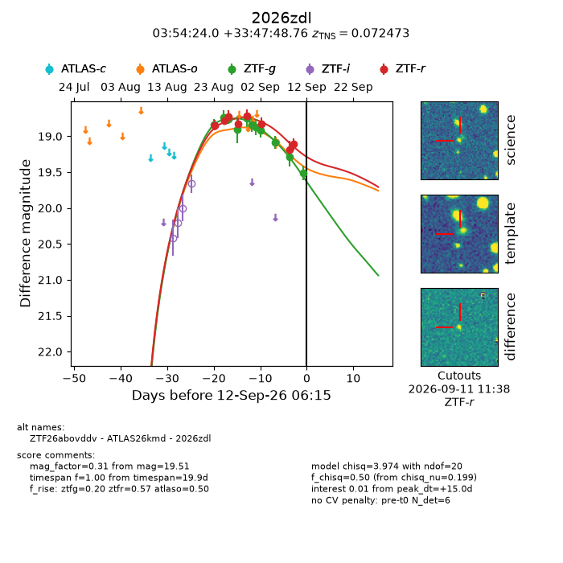
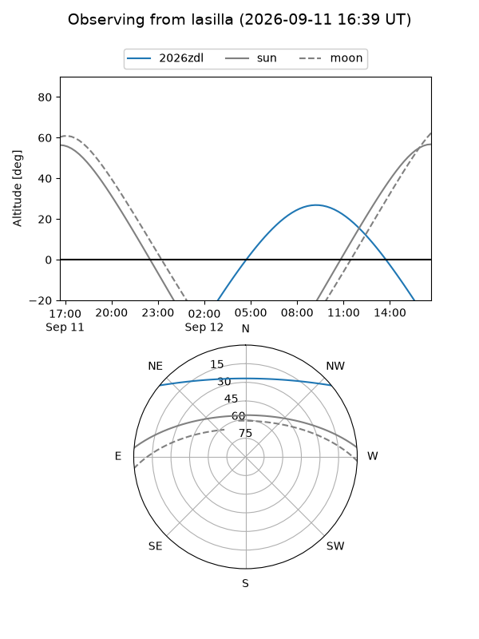
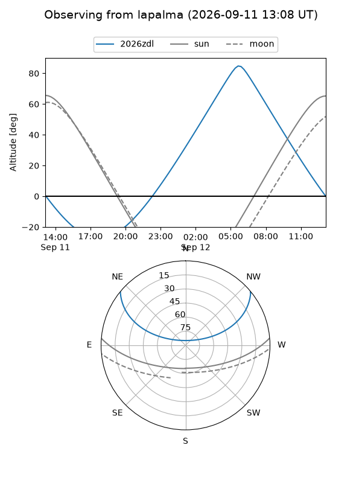
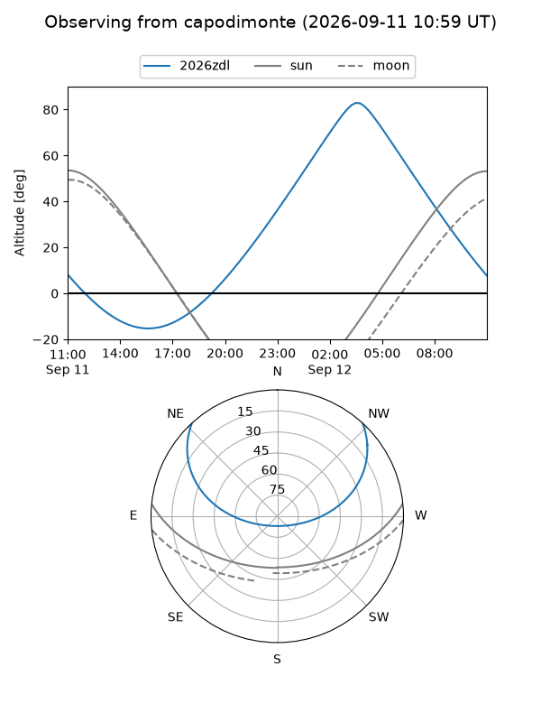
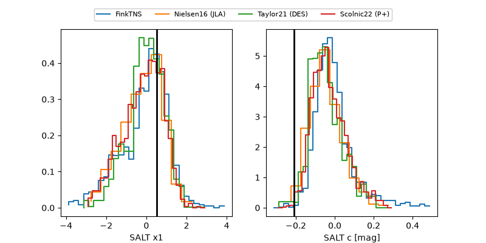

2026zdl
Target 2026zdl at 2026-09-12 06:17
Aliases and brokers:
FINK-ZTF: ztf.fink-portal.org/ZTF26abovddv
Lasair-ZTF: lasair-ztf.lsst.ac.uk/objects/ZTF26abovddv
ALeRCE-ZTF: alerce.online/object/ZTF26abovddv
YSE-PZ: ziggy.ucolick.org/yse/transient_detail/2026zdl
TNS name: wis-tns.org/object/2026zdl
Direct TNS query: direct search
alt names
ZTF26abovddv (ztf,fink_ztf)
2026zdl (tns,yse)
ATLAS26kmd (atlas)
Coordinates:
equatorial (ra, dec) = 58.5998,+33.79688
equatorial (HMS+DMS) = 03:54:23.95,+33:47:48.76
galactic (l, b) = (161.0143,-15.22020)
Flags:
TNS type: SN Ia
TNS redshift: 0.0725
peak dt: +15.0
Photometry:
last atlaso=19.09, ztfg=19.51, ztfr=19.11
1 atlaso, 11 ztfg, 8 ztfr detections
Lightcurve

Visibility



Additional plots
